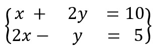
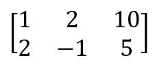
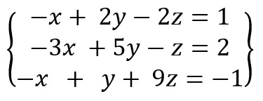
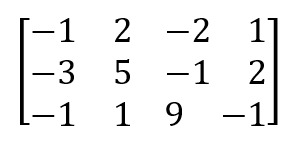
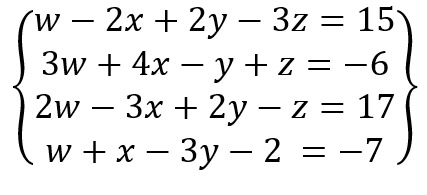
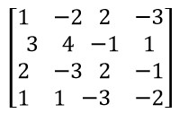

Dado un sistema de ecuaciones
Podemos representar el sistema de ecuaciones en una matriz, como vemos a continuación:
Una vez obtenida la matriz podemos pasar a obtener la determinante y obtener los valores de “x” y “y”
Dado un sistema de ecuaciones
Podemos representar el sistema de ecuaciones en una matriz, como vemos a continuación:
Una vez obtenida la matriz podemos pasar a obtener la determinante y obtener los valores de “x”, “y” y "z"
Dado un sistema de ecuaciones
Podemos representar el sistema de ecuaciones en una matriz, como vemos a continuación:
Una vez obtenida la matriz podemos pasar a obtener la determinante de la Matriz